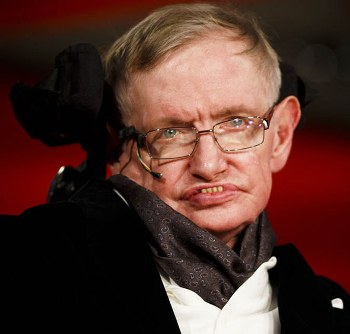

Stephen Hawking
The man who changed the way we see the universe.

“One of the basics rules of the universe, is that nothing is perfect. Perfection simply doesn’t exist… Without imperfection, neither you nor I would exist.” - Stephen Hawking
A Brief History of Hawking
- 1942: Born on 8 January in Oxford, England.
- 1953-1958: Attended St Albans school in North London, where he developed a passion for mathematics.
- 1959: Began his university education at University of Oxford.
- 1962: Specialised in physics. Graduated with a first class degree in natural sciences.
- 1963: Began his research in cosmology and general relativity at the University of Cambridge. Also in this year, Hawking was diagnosed with an "incurable disease", which is later found to be Amyotrophic Lateral Sclerosis, a rare progressive disease that affects movement and speech. At the time, doctors gave him two years of life.
- 1965: Married his first wife, Jane Wilde.
- 1966: Completed his doctorate and is awarded a fellowship at Gonville and Caius College, Cambridge. He worked on singularities in the theory of general relativity and applied his ideas to the study of black holes. Collaborated with mathematician Roger Penrose.
- 1967: Robert, his first child, was born.
- 1970: Hawking and Penrose published a proof that if the universe obeys the general theory of relativity, then it must have begun as a singularity (Big Bang). Lucy, his second child, was born also this year.
- 1974: Discovered a remarkable property: by using quantum theory and general relativity he was able to show that black holes could emit radiation, known today as Hawking Radiation. A few weeks later, he was elected a Fellow of the Royal Society.
- 1979: Hawking was elected Lucasian Professor of Mathematics at the University of Oxford. In April of that same year, Timothy, his third child, was born.
- 1983: In Collaboration with Jim Hartle, he proposed that the universe had no boundary in spacetime. That means before the Big Bang, time did not exist, so the concept of the beginning of time is meaningless. This model is know as Hartle-Hawking State
- 1985: Lost his capacity to talk.
- 1986: He received a computer program called the “Equalizer” from Walter Woltosz, CEO of Words Plus. Hawking could now simply press a switch to select phrases, words or letters.
- 1988: Published his bestseller book:“A Brief History of Time”, a book that explains his ideas in non-technical language.
- 1990: Hawking broke up with Jane.
- 1993: Published the book “Black Holes and Baby Universes and Other Essays”.
- 1995: Hawking married Elaine Manson, she was his nurse in the late 1980s.
- 1996: Co-authored with Roger Penrose “The Nature of Space and Time”.
- 2001: Published the book “The Universe in a Nutshell”
- 2007: Published his first children’s fiction with his daughter Lucy, he wanted to explain physics to kids. The title of the book was “George's Secret Key to the Universe”.
- 2009: Published his second children’s fiction with his daughter Lucy, “George’s Cosmic Treasure Hunt”.
- 2011: Published his third children’s fiction with his daughter Lucy, “George’s and the Big Bang”.
- 2013: Published “My Brief History”, the book is about Hawking’s life.
- 2014: He published his fourth children’s fiction with his daughter Lucy, “George’s and the Unbreakable Code”. In september came out “The Theory of Everything”, a movie about Hawking’s romance with his first wife, Jane Wilde.
“However difficult life may seem, there is always something you can do and succeed at.” - Stephen Hawking
To know more about Stephen Hawking, visit his Wikipedia page.
This page was made by Bruno Lavanini
Feel free to contact me, your feedback will be very appreciated.